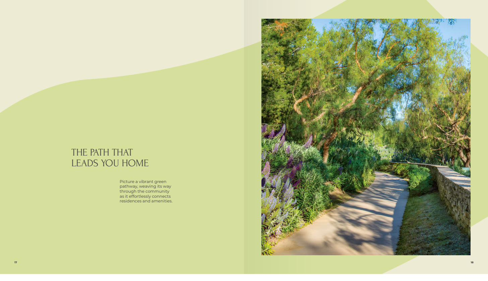
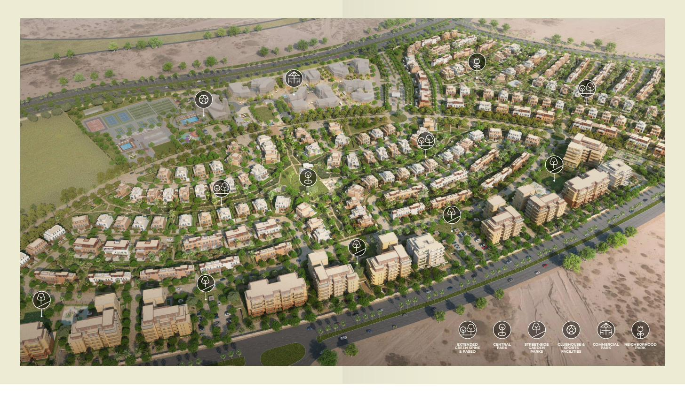
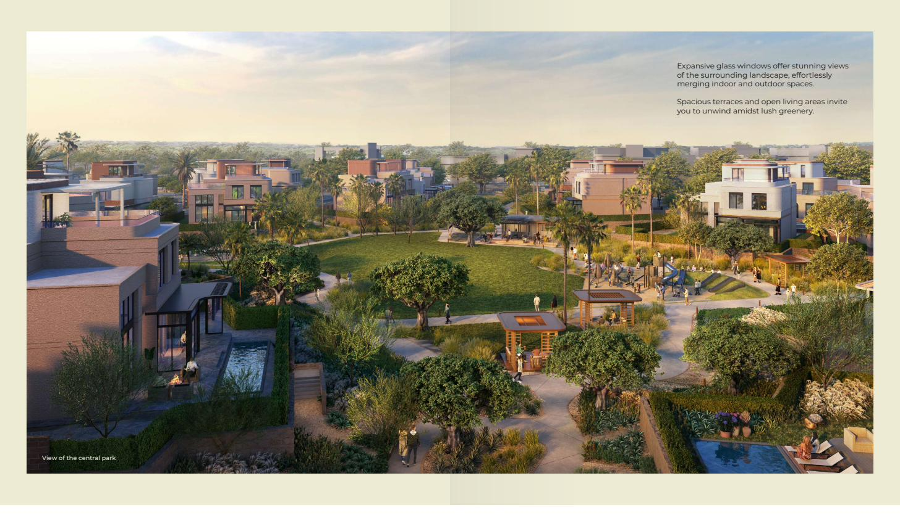
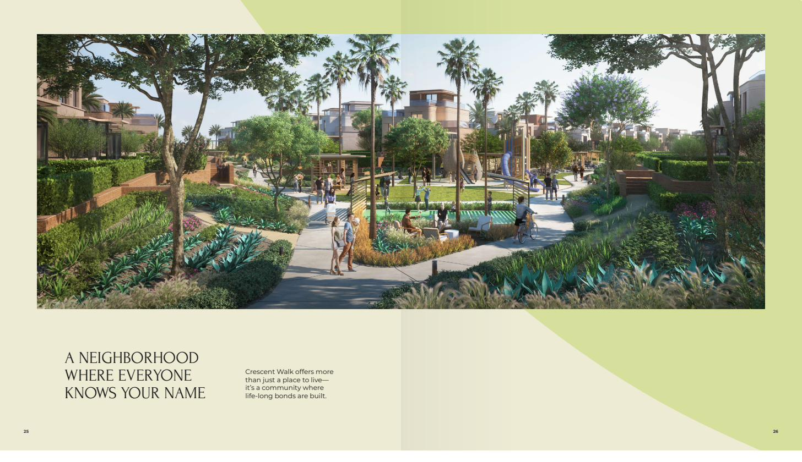
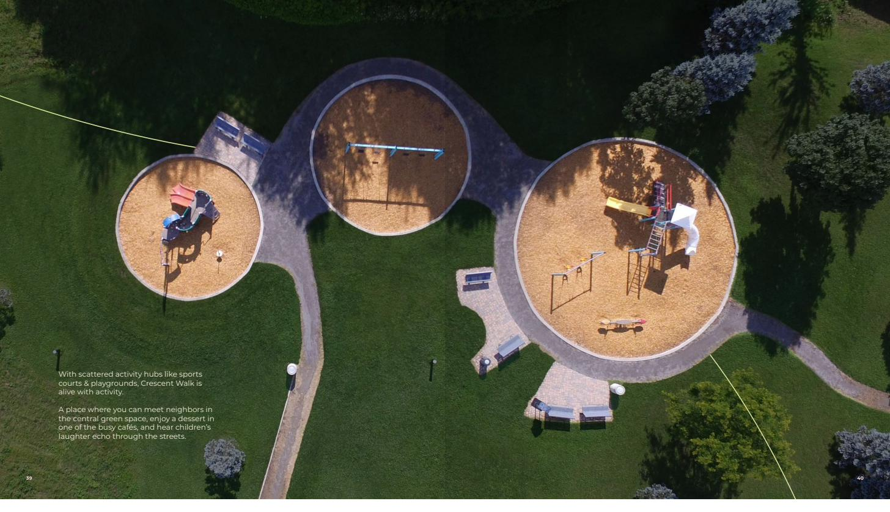
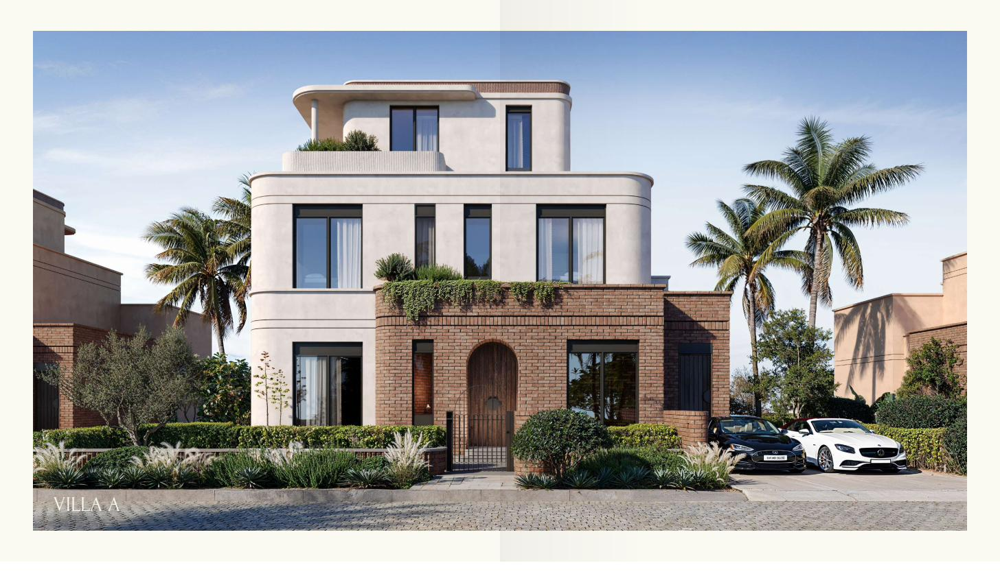

118 acres in East Cairo, organised around a single green pathway that runs the length of the community. It widens into parks, narrows into a cycling lane, and ends at your back gate. ١١٨ فداناً في القاهرة الجديدة، منتظمة حول ممر أخضر واحد يمتد بطول المجتمع السكني. يتّسع ليصبح حدائق، ويضيق ليصبح مساراً للدراجات، وينتهي عند بوابة منزلك الخلفية.

Crescent Walk sits in East Cairo's growing residential belt, with direct access to Sokhna Road, South Teseen and the Mid Ring Road. Close enough to reach the city quickly; far enough that you don't hear it. تقع كريسنت ووك في الحزام السكني المتنامي بشرق القاهرة، مع اتصال مباشر بطريق السخنة، وجنوب التسعين، والطريق الدائري الأوسط. قريبة بما يكفي للوصول إلى المدينة سريعاً، وبعيدة بما يكفي ألا تسمع ضجيجها.

Most compounds put roads first and green space in whatever's left over. Crescent Walk reverses that: the pathway is laid first, and the homes are arranged along it. تبدأ معظم الكمبوندات بالطرق ثم تضع المساحات الخضراء فيما تبقّى. كريسنت ووك تعكس ذلك: يُرسم الممر أولاً، ثم تُنظَّم المنازل على امتداده.
The path becomes a dedicated cycling lane, lined with flowering shrubs and benches, looping the full community. يتحوّل الممر إلى مسار مخصص للدراجات، تصطف عليه الشجيرات المزهرة والمقاعد، ويدور حول المجتمع بالكامل.
Homes have a back gate opening directly onto the green spine — you step out of your garden and you're already on the path. للمنازل بوابة خلفية تفتح مباشرةً على المحور الأخضر — تخرج من حديقتك فتجد نفسك على الممر.
A central park, neighbourhood parks, street-side gardens and a commercial park — each sized for a different kind of afternoon. حديقة مركزية، وحدائق للأحياء، وحدائق على جانبي الطرق، وحديقة تجارية — كل منها بمقياس يناسب نوعاً مختلفاً من الأمسيات.
Sports courts, playgrounds and outdoor work spaces scattered along the route rather than concentrated in one clubhouse. ملاعب رياضية ومناطق ألعاب ومساحات عمل خارجية موزّعة على امتداد المسار بدلاً من تجميعها في نادٍ واحد.

The homes borrow from Cairo's golden-age neighbourhoods: art deco proportion, brickwork and masonry banding, and materials that change character as the light moves across them through the day. تستلهم المنازل أحياء القاهرة في عصرها الذهبي: نِسَب الآرت ديكو، وأعمال الطوب والأشرطة الحجرية، ومواد يتبدّل طابعها مع حركة الضوء عليها طوال اليوم.
Expansive glass opens the living areas onto terraces and gardens. A winter garden gives you somewhere to sit out the colder months without going indoors. تفتح الواجهات الزجاجية الواسعة مناطق المعيشة على التراسات والحدائق. وتمنحك حديقة الشتاء مكاناً للجلوس في الأشهر الأبرد دون أن تدخل إلى الداخل.



Tell me your budget and what you need from the space, and I'll send back what's actually available this month. أخبرني بميزانيتك وبما تحتاجه من المساحة، وسأرسل لك ما هو متاح فعلياً هذا الشهر.